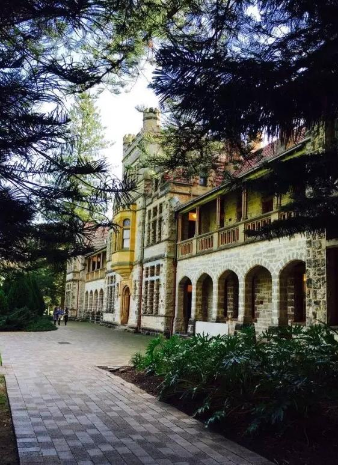
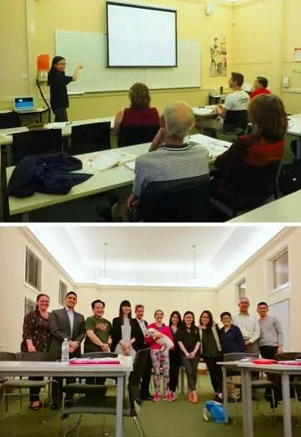
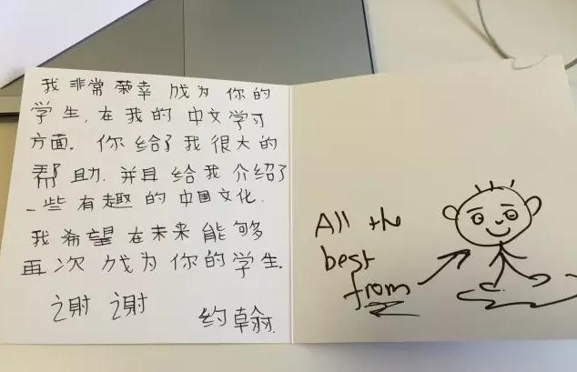
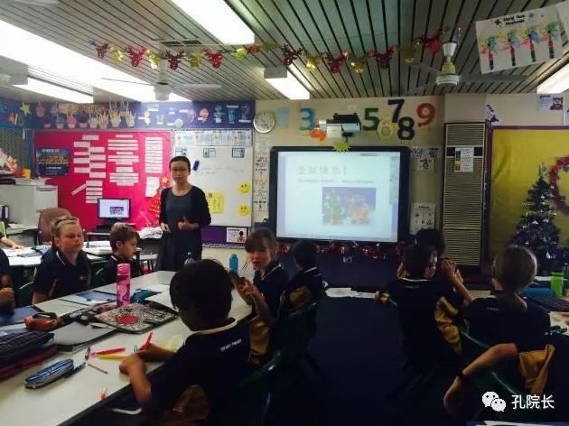
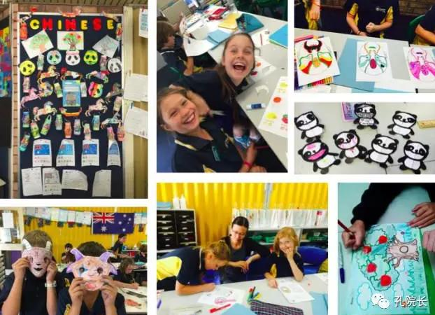
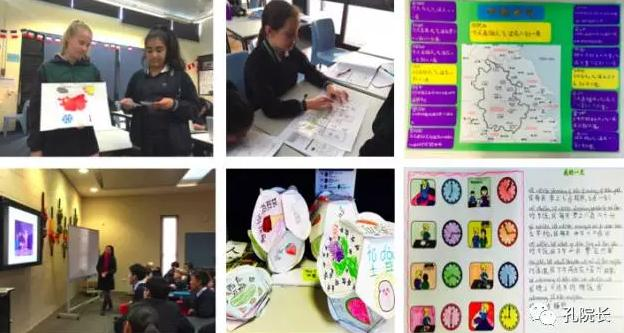
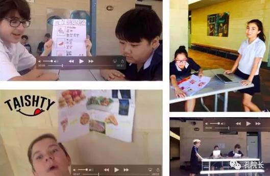

每日一篇——志愿者风采/ 我在西澳珀斯 教汉语
 643
643
2014年4月1日，我飞往了南半球的澳大利亚，来到了素有“黑天鹅城”之称的西澳首府珀斯市。较之澳洲东部悉尼、墨尔本的繁华与喧闹，珀斯是个宁静、安逸的小城。就连市中心的广场，都少见拥嚷的人群，倒是常有悠哉的鸽子，三三两两，来去自如。
我赴任的西澳大学孔子学院成立于2004年，是澳大利亚第一所孔子学院，位于西澳大学Claremont分校区。图片里绿树掩映下，古堡般拥有百年历史的建筑便是孔院办公室、教室所在地。

和每位外派老师一样，在孔院的工作其实有很多方方面面，我只着重说教学吧。
三年时光，我的汉语教学工作主要有三部分：孔子学院成人课的教学，以及先后在当地Creaney Primary School（小学）和Shenton College（中学）任教。
其中，这所小学之前从未开设过汉语课。去学校的第一天，学校校长和语言部负责人和我谈论了他们对汉语课的规划。我按照他们的要求，在没有任何教学资源的情况下，为学校制定了汉语课程大纲，编写了全部学习资料。从幼儿园、学前班到六年级，学校一共开了十四个班，大约350名学生，全部由我任教。直到 2015 年初，孔院派了一名志愿者给我当助教。
另一所中学则是珀斯名校，在当地有很好的口碑和影响力。学校语言部已开设有法语、日语和手语课，历史悠久。该校在和孔子学院建立了合作关系后，开始设立汉语课，且作为正式的学分课程，纳入当地教育部系统。我在该校教七年级和八年级。由于汉语课刚刚起步，学校同样没有教学资源，除日常教学外，我为他们制定了汉语教学计划，编写了汉语课本（共完成了四册）。还编写了各类试卷，组织听、说、读、写四方面的考试。学期期末，给学生评定学分等级，写学期评语，参与家长见面会，发放成绩报告单。
总的说来，三年任期，在教学方面，我教过了成人，教过了幼儿园、学前班，也教过了小学、中学。常和人笑说我这三年的教学生涯可谓圆满矣。、
接下来分别说说这三部分教学的一些具体经历。
1、孔子学院的成人课

三年里，我先后担任过七个不同汉语级别的任课老师。所教学生都是非中文背景，有在读大学生，有在职工作人员，也有对中文和中国文化兴趣浓厚的退休老人。其中有一位叫Michael的学生，给我留下了很深的印象，因为他学习汉语的认真态度特别让我钦佩和感动。
我教Michael的时候，他已经72岁了。他的家住在美丽的Mandurah, 离孔院很远，每次过来上汉语课都要开一个多小时的车。Michael年轻时曾在堪培拉国立大学学过汉语，如今依然能写一手漂亮的汉字。课堂上他常常问起很多成语典故甚至古典诗词，让我惊讶于他的学识。每次课后作业，他也总是很认真地完成，第一个写邮件递交，并且积极地和我讨论相关知识点。
孔院曾在每周六上午于珀斯当地华语电台播出广播节目“空中孔子课堂”，其中有一个栏目叫《学汉语大家谈》，邀请学生交流学习汉语的心得体会。我制作过几期栏目，其中一期就是采访的Michael。

除Michael以外，另一个叫John（约翰）的学生也让我印象特别深，因他说过的一段话让我为之动容。John说他想告诉所有人，对于中国和中国文化，必须自己亲身去经历，去体会，才能更好地去理解。那时你会明白，你亲自体验到的中国和你通过local media了解到的中国（言外之意指当地某些媒体的负面报道）是不一样的。作为一名对外汉语人，每当看到学生对中国诚心地理解和维护，都会感到由衷欣慰。我想，这便是对我们努力付出，传播汉语言文化最好的回报吧。
2、Creaney Primary School小学

学校情况我已在前文作了大致介绍。学校第一次尝试开设汉语课，校方希望老师能以培养学生学习汉语的兴趣为主。因此，每次汉语课，除了安排语言知识的学习，更多的是设计丰富的课堂活动包括手工劳作，寓教于乐。在这过程中，还得考虑到全校学生年龄段的不同，设计难易有别的任务。以“春节”主题（羊年）为例，手工劳作方面，低年级的学生完成了印有“羊年快乐”字样及新春图片的涂色纸；中年级的学生要求书写汉字“羊”并制作羊面具；高年级的学生在完成面具的基础上，还给他们分发了红包模板，指导他们在模板上书写“新年快乐”等汉字、自己创作羊年吉祥图案，最后涂上红色，完成属于他们自己的 “Lucky Bag”。

文化介绍也因年级的不同有所区分，对于高年级的学生，除了讲解春节习俗，十二生肖的故事，“年”的来历，还讲解了什么是农历，以帮助他们更好地了解中国传统节日。最后，还请了班级里不同文化背景的几名学生（比如来自中东、南非的学生）分别说说他们国家最重要的节日，分享不同文化的魅力。
3、Shenton College中学
不同于Creaney Primary School小学旨在培养学生学习汉语的兴趣，该校最大的特点就是：汉语课是正式的学分课。且Shenton College中学作为珀斯名校，类似于国内的重点中学，无论校方还是家长都对学生的考分、成绩特别重视。汉语课也不例外。

我常常在考试前收到家长询问该如何督促学生备考，以及考试后家长关心考分和孩子排名情况的邮件。甚至有家长在得知自己的孩子在本班的排名后还要问清楚在整个年级排第几的…学校亦会在每学期结束从当地教育部系统调出资料，计算该学期汉语课每个年级取得A等级学生数的百分比，跟整个西澳州设有汉语课的学校进行比较，再跟珀斯同等级别的中学进行比较。并要求老师根据得出的数据，写成分析报告交给校长。我作为孔院过来的老师，也不例外，这就决定了我在语言教学上必须倾注很多的精力。我的努力也取得了令人满意的结果。2016年度，我教的七年级，取得 A 等级学生数的百分比是整个西澳州平均百分比的两倍，比珀斯同等中学的平均百分比也高出了将近30%。

除语言本体知识的教学外，我也比较注重学生口语表达能力的培养，充分发挥他们喜欢自主创作的积极性。例如在完成一篇课文的教学后，常常鼓励学生将所学内容编成小短剧，拍成短片，激发学生说汉语的兴趣。
在2016年西澳中文教师协会和孔子学院联办的中文口语比赛中，Shenton College中学第一次有学生代表参加了比赛。2016年度进行的 YCT考试，Shenton College中学也是第一次有学生报名参加，其中，一名八年级学生挑战了YCT三级考试并顺利通过。看到学生取得的成绩，作为老师无疑是最高兴的。如今，我虽已离任，却依然由衷希望该校的汉语教学能越来越好，也希望在今后的中学生汉语桥比赛中，能看到曾经教过的学生们。
三年时光，说长不长，说短也真的不短。也许是离任前的几周一直在和人道别，临到和珀斯说再见，才发现自己内心深处的些许不舍。一次次的送别会，一张张的祝福卡…和同事们道别，和结识的好朋友们道别，和教过的学生们道别…这三年，于我，终是难忘的历程。文字的最后，附上网红萌物，西澳洛特尼斯岛特有的短尾矮袋鼠一枚（本人亲摄），道一声，江湖再会！
作者介绍：
季承，华东师范大学国际汉语教师研修基地孔子学院专职教师。于2014年4月至2017年3月，在西澳大利亚大学孔子学院任教。